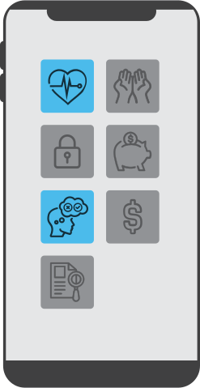
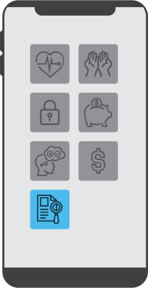
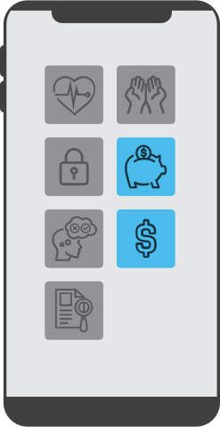
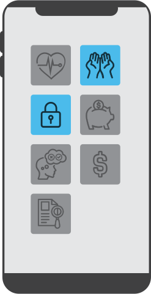

The age of digital medicine
As digital health solutions become part of the benefits package, here’s what employers should consider as they navigate the marketplace.






Cellular glucometers that send your glucose readings in real time. Text messages that remind you to take your blood-pressure medicine. A call from your doctor, triggered by certain symptoms you’ve checked off on your phone. Welcome to the age of digital medicine.
Though not all conditions
are apt for apps, a growing
number of employers are
using digital health to help
their employees manage their wellbeing—particularly for chronic conditions where constant monitoring and management can result in improved health outcomes.
At the same time, these apps can avoid in-office visits, saving individuals time and driving down some costs for employers as medical care continues to focus on delivering quality outcomes at an affordable cost.
Here’s a look at where digital apps could help your organization, and what to be mindful of as you consider
such investments.
Select each app icon to read more
Digital apps work best when there
are evidence-based guidelines that can be turned into an algorithm
and delivered through an app. Some conditions that meet these criteria include diabetes, musculoskeletal disorders and behavioral health. These conditions are also major cost drivers for employers; therefore, digital apps can serve as low-cost solutions.
Conditions
Digital apps give people a sense of ownership in the process of improving their health, while allowing for new lines of communication. Some people are more comfortable spending time sharing and receiving health insights from an app than they would be sitting face to face with a doctor or therapist. That’s because if they perceive judgment through a facial expression or tone, they might not feel as comfortable describing their condition. In this way, digital apps can be part of the destigmatization process around certain conditions, such as anxiety and depression, making therapeutic interventions more powerful.
Engagement
The beauty of digital health is that data is provided on an aggregate basis, meaning employees’ personal information is anonymized. Employers can use the data set to get a broad look at where and when employees are spending time on the app and what types of questions are coming up, while also seeing if there are any use patterns among certain geographies or demographics. This can help employers understand participation levels that could inform investment decisions in digital health down the line.
Privacy and Data
Strategies that incorporate personalized solutions and leverage medical and pharmacy data to generate health insights can help improve health outcomes and reduce overall costs. Cost savings vary depending on the level of patient engagement, and whether the app can integrate with electronic health records and other mobile devices.
Cost Savings
Some of the most important questions employers should ask as they weigh their app-investment decisions are:
-Does your workforce have access to personal smartphones?
-Are you looking to roll out the app for a certain portion of employees, such as those with a specific chronic condition, or company-wide, such as with an app tied to a wellbeing campaign?
-Can the app be integrated with the medical plan’s care-management programs?
Decision-making
With most apps priced per employee per month, it’s important to look through contracts and negotiate terms to ensure your company isn’t paying full freight for employees who are only partially engaged or not engaged at all. It’s also good to keep tabs on the frequency with which apps and remote monitoring devices are changing and if data from one app can be transitioned to another to help deliver consistent readings as people change devices.
Pricing
Amid the COVID-19 crisis, a professional services firm with about 10,000 employees launched an app to provide mental health support. The company used its employee assistance program and additional videos to provide training about the app and integrated the app with other solutions, such as including child care access and information in the app. Support for the digital health solution was backed by the firm’s executive leadership team. Several months after the HR team unveiled heightened campaigns, the app engagement rate had reached more than 20 percent—great results in a small amount of time.
Case Study

The age of digital medicine
As digital health solutions become part of the benefits package, here’s what employers should consider as they navigate the marketplace.
Cellular glucometers that send your glucose readings in real time. Text messages that remind you to take your blood-pressure medicine. A call from your doctor, triggered by certain symptoms you’ve checked off on your phone. Welcome to the age of digital medicine.
Though not all conditions are apt for apps, a growing number of employers are using digital health to help their employees manage their wellbeing—particularly for chronic conditions where constant monitoring and management can result in improved health outcomes.
At the same time, these apps can avoid in-office visits, saving individuals time and driving
down some costs for employers as medical care continues to focus on delivering quality outcomes at an affordable cost.
Here’s a look at where digital apps could help your organization, and what to be mindful of as you consider such investments.
Select each app icon to read more
Digital apps work best when there are evidence-based guidelines
that can be turned into an algorithm and delivered through an app. Some conditions that meet these criteria include diabetes, musculoskeletal disorders, and behavioral health. These conditions are also major cost drivers for employers and therefore digital apps for them are attractive as
low-cost solutions.
Conditions
Digital apps give people a sense of ownership in the process of improving their health, while allowing for new lines of communication. Some people are more comfortable spending time sharing and receiving health insights from an app than they would be sitting face-to-face with a doctor or therapist. That’s because if they perceive judgement via a facial expression or tone, they might not feel as comfortable describing their condition. In this way, digital apps can be part of the destigmatization process around certain conditions, such as anxiety and depression, making therapeutic interventions more powerful.
Engagement
The beauty of digital health is that
data are provided on an aggregate basis, meaning employees’ personal information is anonymized. Employers can use the dataset to get a broad look at where and when employees are spending time on the app and what types of questions are coming up, while also seeing if there are any use patterns among certain geographies
or demographics. This can help employers understand participation levels that could inform investment decisions in digital health down the line.
Privacy and Data
Strategies that incorporate personalized solutions and leverage medical and pharmacy data to generate health insights
can help improve health outcomes and reduce overall costs. Cost savings vary depending on the level of patient engagement, and whether the app can integrate
with electronic health records and other mobile devices.
Cost Savings
Some of the most important questions employers should ask as they weigh their app-investment decisions are:
-Does your workforce have access to personal smartphones?
-Are you looking to roll out the app for a certain portion of employees, such as those with a specific chronic condition, or company-wide, such as with an app tied to a wellbeing campaign?
-Can the app be integrated with the medical plan’s care-management programs?
Decision-making
With most apps priced per employee per month, it’s important to look through contracts and negotiate terms to ensure your company isn’t paying full freight for employees who are only partially engaged or not at all engaged. It’s also good to keep tabs on the frequency with which apps and remote monitoring devices are changing, and if data from one app can be transitioned to another to help deliver consistent readings as people change devices.
Pricing
Amid the COVID-19 crisis, a professional services firm with about 10,000 employees launched an app to provide mental-health support. The company used its employee assistance program and additional videos to provide training about the app and integrated the app with other solutions, such as including childcare access and information in the app. Support for the digital health solution was backed by the firm’s executive leadership team. Several months after the HR team had unveiled heightened campaigns, the app engagement rate reached over 20 percent—great results in a small amount of time.
Case Study